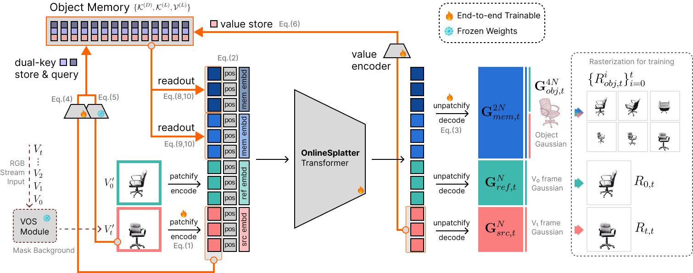
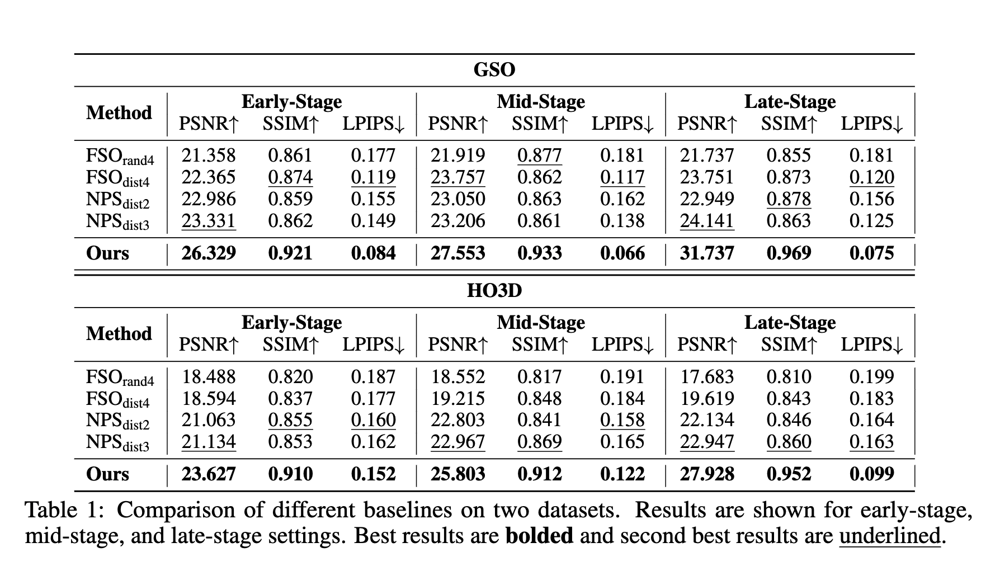
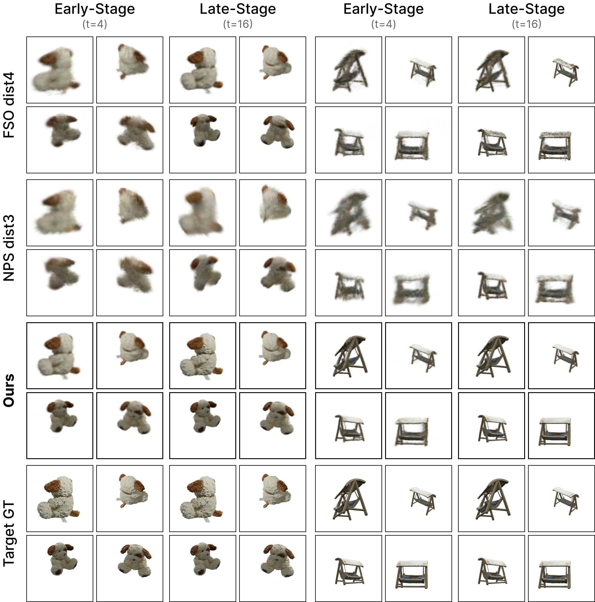
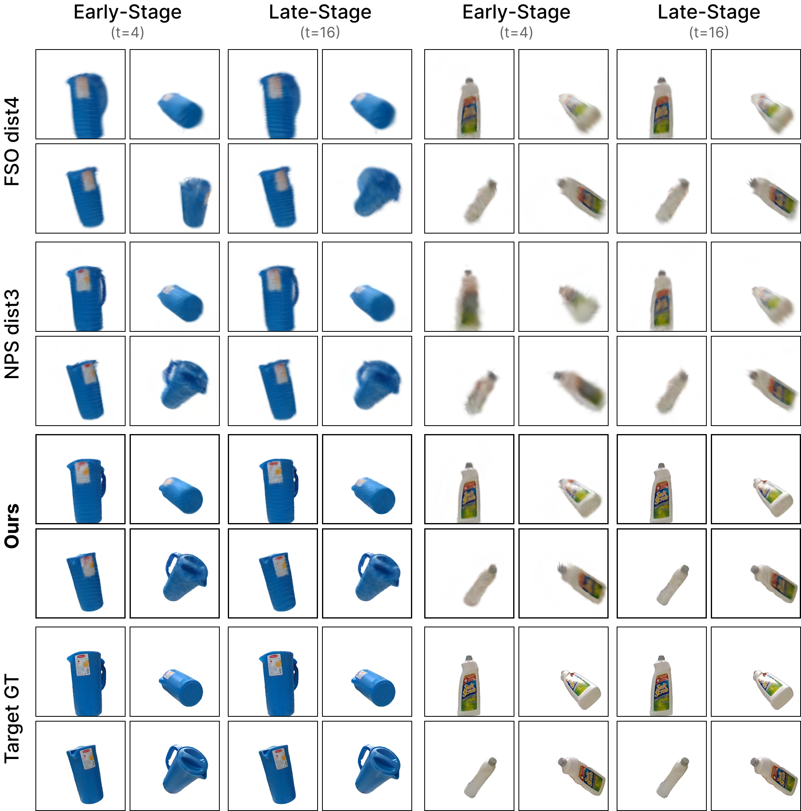

Free-moving object reconstruction from monocular video remains challenging, particularly without reliable pose or depth cues and under arbitrary object motion. We introduce OnlineSplatter, a novel online feed-forward framework generating high-quality, object-centric 3D Gaussians directly from RGB frames without requiring camera pose, depth priors, or bundle optimization. Our approach anchors reconstruction using the first frame and progressively refines the object representation through a dense Gaussian primitive field, maintaining constant computational cost regardless of video sequence length. Our core contribution is a dual-key memory module combining latent appearance-geometry keys with explicit directional keys, robustly fusing current frame features with temporally aggregated object states. This design enables effective handling of free-moving objects via spatial-guided memory readout and an efficient sparsification mechanism, ensuring comprehensive yet compact object coverage. Evaluations on real-world datasets demonstrate that OnlineSplatter significantly outperforms state-of-the-art pose-free reconstruction baselines, consistently improving with more observations while maintaining constant memory and runtime.

Overview of OnlineSplatter Pipeline. The input to our framework consists of a stream of RGB images \(\{V_t\}_{t=0}^N\), where object masks \(\{M_t\}_{t=0}^N\) are generated and applied to remove background on-the-fly using an off-the-shelf online video segmentation (OVS) module running alongside our framework. At each timestep \(t\), OnlineSplatter processes the input frame \(V_t\) by first patchifying it into patch tokens. These tokens are then fed into a transformer-based architecture, which directly reasons and outputs pixel-aligned 3D Gaussian representations in a canonical space. Central to our method is object memory, an implicit module based on cross-attention, which is queried and updated at every timestep. This memory enables the incremental reconstruction of the object, consistently refining the object representation (\(\mathbf{G}_{obj,t}^{4N}\)) as new observations arrive in a fully feed-forward manner.
Experiment setting: To properly evaluate our online object reconstruction framework, we need to assess how well it performs at different stages of observation accumulation. This is crucial because real-world applications often require reliable reconstruction even with limited initial observations. We therefore design a stage-wise evaluation protocol that examines performance across three distinct phases: 1) Early Stage (\(\mathcal{T}_{\text{early}} := \{1 \leq t \leq 4\}\)): Tests the model's ability to quickly establish an initial object representation with minimal observations; 2) Mid Stage (\(\mathcal{T}_{\text{mid}} := \{5 \leq t \leq 10\}\)): Evaluates how well the model refines its reconstruction as more views become available; 3) Late Stage (\(\mathcal{T}_{\text{late}} := \{11 \leq t \leq T\}\)): Assesses the model's capability to maintain and improve reconstruction quality with extended observation sequences.

Two key insights emerge: good early-stage performance and temporal development. Even with fewer than four observations, OnlineSplatter significantly outperforms all baselines. Over time, a clear divergence appears. Baselines using explicit frame selection often exhibit unstable or stagnant performance. In contrast, OnlineSplatter consistently improves with more observations, as also shown qualitatively below.


We find that OnlineSplatter delivers notably better visual quality and geometric accuracy from early to late stages. This underscores the strength of our Object Memory mechanism in leveraging temporal cues for progressive reconstruction refinement.
@article{huang2025onlinesplatter,
title={OnlineSplatter: Pose-Free Online 3D Reconstruction for Free-Moving Objects},
author={Huang, Mark He and Foo, Lin Geng and Theobalt, Christian and Sun, Ying and Soh, De Wen},
booktitle={NeurIPS 2025},
year={2025},
}